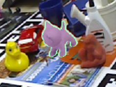

Biography
I am currently a PhD student in University of Washington advised by Prof. Dieter Fox.Before that, I received my M.S. degree in Control Science and Technology from Tsinghua University in 2017 advised by Prof. Xiangyang Ji and my bachelor degree in Automation from Tsinghua University in 2014. I also worked with Dr. Jifeng Dai as a research intern at Microsoft Research Asia for 18 months.
My research focuses on computer vision and deep learning, with emphasis on providing better algorithms for machine to understand the world. My current work is to extract more information from RGB images, like accurately estimating object poses using RGB images.
News
- Our paper STOW has been accepted by CoRL 2023! Code and dataset is coming!
- Our paper DeepIM has been accepted by ECCV 2018 as oral! Code is released on Github and award one of the 12 best papers in ECCV 2018. An extended version is published on IJCV.
- Our paper Deformable ConvNets has been accepted by ICCV 2017. Code is released on Github. There is also a cool third-party improvement showing the best single-model performance on COCO dataset.
- Awarded Excellent Graduates of Beijing.
- Our paper FCIS has been accepted by the CVPR 2017 as spotlight! Check out the code on Github
- We won first prize in MS COCO segmentation challenge 2016.
- Our paper R-FCN has been accepted by the NIPS 2016 conference, and code is released on Github.
- Our paper Inst-FCN has been accepted by the ECCV 2016 conference.
Publications
(+ indicates equal contribution)|
DeepIM: Deep Iterative Matching for 6D Pose Estimation Yi Li, Muru Zhang, Markus Grotz, Kaichun Mo, Dieter Fox In Conference on Robot Learning (CoRL), 2023 PDF, Bibtex, Poster, Spotlight Video, Project Page |
{kind=link}
|  |
DeepIM: Deep Iterative Matching for 6D Pose Estimation Yi Li, Gu Wang, Xiangyang Ji, Yu Xiang, Dieter Fox In International Journal of Computer Vision (IJCV), 2020 In European Conference on Computer Vision (ECCV), 2018 (oral). PDF, Bibtex, Code Poster Slides Project Page IJCV PDF |
{kind=link}
| |
Deformable Convolutional Networks Jifeng Dai+, Haozhi Qi+, Yuwen Xiong+, Yi Li+, Guodong Zhang+, Han Hu, and Yichen Wei In International Conference on Computer Vision (ICCV), 2017 (oral). PDF, Bibtex, Code |
|
|
Fully Convolutional Instance-aware Semantic Segmentation Yi Li+, Haozhi Qi+, Jifeng Dai, Xiangyang Ji, and Yichen Wei In Computer Vision and Patter Recognition (CVPR), 2017 (spotlight) PDF, Bibtex, Code Visualize Results, Slides |
{kind=link}
|
R-fcn: Object detection via region-based fully convolutional networks Jifeng Dai, Yi Li, Kaiming He, Jian Sun In Advances in Neural Information Processing Systems(NIPS), 2016 PDF, Bibtex, Code, Poster |
||
|
Instance-sensitive fully convolutional networks Jifeng Dai, Kaiming He, Yi Li, Shaoqing Ren, Jian Sun In European Conference on Computer Vision (ECCV), 2016 PDF, Bibtex, Poster @inproceedings{dai2016instance, title={Instance-sensitive fully convolutional networks}, author={Dai, Jifeng and He, Kaiming and Li, Yi and Ren, Shaoqing and Sun, Jian}, booktitle={European Conference on Computer Vision}, pages={534--549}, year={2016}, organization={Springer International Publishing} } |
{kind=link}
{kind=link}
Honor and Awards
- Reviewer of AAAI, CVPR, ICCV and ECCV since 2018
- Outstanding 2017 Master Thesis by Chinese Institute of Electronics (10 in China)
- Outstanding 2017 Graduate Student in Beijing
- Outstanding 2016 Intern in MSRA
- 2013 National Scholarship
- 2012 Tsinghua Alumni Zheng Geru Scholarship